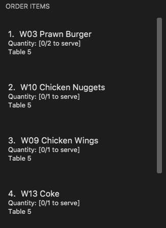
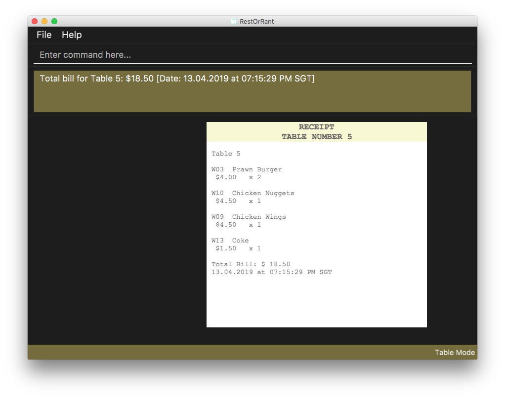

About the project
RestOrRant is a command line application that my team and I had to work on for a Software Engineering project. Given a basic code for an address book, we had the choice of enhancing or morphing it into a desktop application that caters to specific users' needs.
We decided to morph it into RestOrRant (ROR), a restaurant management application for restaurant managers, waiters and cashiers. It is designed for them to perform front-end operations more efficiently like managing tables, handling orders, tracking the availability of menu items and calculating statistical data using the Command Line Interface (CLI).
RestOrRant is split into 4 main features: Tables, Orders, Menu and Statistics. To cater to needs of the user, modes were created to make the application user-friendly.Restaurant Mode, Table Mode, Menu Mode and Statistics Mode are modes meant to handle these 4 features respectively. Each of my teammates are in charge of one feature and mine was Statistics. In the following sections, I will be elaborating more on my contributions and extract relevant parts from the User and Developer Guides that I wrote for the Statistics feature.+
You may find it useful to refer to the table below for the different symbols and formatting used in this portfolio.
|
Command that can be typed into the command box |
|
Expected result after executing the command |
|
Additional information that is good to know |
|
Important pointers to take note |
Summary of contributions
Overall, my role in this project encompasses managing the UI components, Statistics feature, documentation, project deadline and deliverable. The following provides a detailed summary of the coding, documentation and other helpful contributions I have contributed to the team project.
-
Major Commands implemented
-
Calling for bill: added the ability to calculate and record the bill of a specific table.
-
What it does: allows users to calculate and record the total bill accumulated from the table’s orders.
-
Justification: This feature is necessary to update the restaurant revenue, status of the specified tables and the popularity of the menu items that were ordered.
-
Highlights: This command is only usable in Table Mode.
-
-
Calling for revenue: added the ability to get revenue from the specified year, month and date
-
What it does: allows the user to get the required revenue the user specifies.
-
Justification: This feature allows the restaurent manager to conveniently calculate and obtain the revenue he/she wants. It also eliminates the possibility of human errors when calculating the revenue.
-
Highlights: This command is only usable for dates, months and years that are valid. In the case where no date, month or year is specified, the current day’s revenue will be returned.
-
-
Calling for yearly, monthly and daily: added the ability to get revenue from the specified year, month and date
-
What it does: allows the user to get the required revenue the user specifies.
-
Justification: This feature allows the restaurent manager to conveniently calculate and obtain the revenue he/she wants. It also eliminates the possibility of human errors when calculating the revenue.
-
Highlights: This command is only usable for dates, months and years that are valid. In the case where no date, month or year is specified, the current day’s revenue will be returned.
-
-
-
Minor enhancement: Create a Bill Mode that displays a receipt for the user.
-
Code contributed: Please refer to theses links to view my code
[Project Code Dashboard] [Test code] -
Other contributions:
-
Project management:
-
Ensures that the User Guide and Developer Guide are completed according to what was required.
-
Documents essential discussion pointers during meetings and share them with the team.
-
Informs team about the deadlines.
-
-
Enhancements to existing features:
-
Documentation:
-
Reorganise the User Guide according to modes: #123
-
-
Community:
-
Contributions to the User Guide
Given below are sections I contributed to the User Guide. |
Calling the bill of an order : bill
Now that all the orders have been served and the customer is ready to pay for the meal, you can call the bill to obtain the customer’s receipt.
| This command is irreversible. Once the command is executed, the order will be cleared and the table’s occupancy will be reset to allow new customers to use the table. The money earned from the bill will automatically be added to RestOrRant’s revenue statistics. |
The bill can only be called when all order items have been served.
|
|
You will see a success message in the Results Display and the user interface will change its colour scheme and
display. |
As seen from the image below, Table 5 has 4 items in the Order Panel. Note that all items have been
served.

When

When you switch to Restaurant Mode using the 
|
Contributions to the Developer Guide
Given below are sections I contributed to the Developer Guide. |
Classes for Statistics feature in Model
The Statistics feature was implemented with the introduction of a new set of classes to Model. A new Statistics class encapsulates all the methods and classes related to this feature. It also contains a listener that is used to update the storage when any modification is made to the statistics. The Statistics object is stored in RestOrRant and it exposes a read-only interface ReadOnlyStatistics to allow the other components to retrieve statistics-related information while maintaining data integrity.
Statistics contains a RevenueList, which contains a list of all the revenue recorded in the restaurant, represented by Revenue objects. Each Revenue object consists of 3 objects:
-
Year indicates the year which the revenue was earned
-
Month indicates the month which the revenue was earned
-
Day indicates the day which the revenue was earned
YearlyRevenue, MonthlyRevenue and DailyRevenue are classes that extends Revenue to inherit its properties. Hence, they are all uniquely identified by Year, Month and Day. Similarly, Date and Bill also consists and are identified by the above 3 objects.
The Statistics Class Diagram below shows the relationship between the classes.
Design Considerations for Statistics Storage
The data stored in Storage (/data/statistics.json) only encompasses Day, Month, Year and Revenue earned on
that specific date. These data are stored when the bill command is called.
| Aspect | Alternative 1 | Alternative 2 |
|---|---|---|
Storage of statistical data |
Stores daily revenue which comprises of day, month, year and revenue. In a restaurant, it is unlikely that a customer will request for a refund after consuming and paying for the meal. Even if there are complaints about the meal, they will demand for a newly cooked dish before calling for the bill. Hence, we did not see the need to store receipts in the storage and chose this design. |
Stores bill which comprises of the day, month, year, bill, table number and receipt. |
Billing an order
Each Bill is unique to a Table. Hence, the bill mechanism can only be executed under Table Mode.
The Table and its TableNumber was specified when switching over to Table Mode.
The way TableNumber is specified is explained in Orders feature.
Once the bill command is called, it will internally switch to Bill Mode where the receipt of
the specified table is displayed. Concurrently, the bill mechanism accesses functions from Tables, Orders, Menu and
Statistics to execute the following:
-
Table: Updates specified table’s occupancy to accommodate new customers.
-
Order: Clears the order list that belongs to the specified table.
-
Menu: Saves the quantity of menu items ordered in the Menu storage (/data/menu.json).
-
Statistics: Saves the revenue in the Statistics Storage (/data/statistics.json).
Current Implementation
The main crux of Bill mechanism is implemented in BillCommand. Just like any other commands, BillCommand#execute() overrides Command#execute() which is called in LogicManager. It takes in the current mode, model and command history which will provide the necessary functions it will need to execute the command properly with the following operations:
-
BillCommand#calculateBill() — Creates a bill with a receipt of all menu items ordered and updates the quantity of menu items ordered in Menu#menuItems.
-
BillCommand#createOrUpdateRevenue() — Either saves the bill as a new DailyRevenue or updates an existing Revenue in the Statistics#revenueList.
-
BillCommand#updateStatusOfTable() — Updates the occupancy of the specified table to indicate that it has zero customers and resets the selected table to null.
-
Model#clearOrderItemsFrom() — Clears the order list to prepare for the next customer.
This sequence diagram provides an overview of how the operations above work together to execute bill command.
bill commandTo give you a better understanding of the sequence diagram, the following is a usage scenario and how the bill mechanism behaves at each step.
Step 1.
Let’s assume that the user is in Table Mode 1. This means Table 1 is the selected table. Before the
bill command can be executed successfully, BillCommand#execute() conducts 2 checks.
-
Checks that current table obtained from Model#getSelectedTable() exists.
-
Checks that all order items in Model#getFilteredOrderItemList() have been served. The status of the order item is determined via Model#getOrderItemStatus().
Step 2. Given that the command passes all checks, the user can successfully run BillCommand#calculateBill() to assign a new calculated bill to the tableToBill attribute. Let’s refer to the function’s sequence diagram below.
BillCommand#calculateBill() calls both Model#getFilteredOrderItemList() and ReadOnlyRestOrRant#getMenu() to obtain the table’s list of orders and the restaurant’s menu. After which, it iterates through the list of orders to obtain individual OrderItem and executes the following in each iteration:
-
Gets MenuItem by passing the code of the OrderItem into Menu#getItemFromCode().
-
Retrieves the quantity of OrderItem ordered using OrderItem#getQuantityOrdered().
-
Updates the quantity of menu item ordered using ReadOnlyMenu#updateMenuItemQuantity().
-
Creates a receipt that appends the MenuItem#getCode(), MenuItem#getName(), MenuItem#getPrice() and the quantity retrieved previously.
-
Adds the price of each MenuItem multiplied by the quantity ordered to the total bill.
After iterating through the list of orders, receipt appends the final calculation of the total bill and the function returns a new Bill that contains the updated tableNumber, totalBill and receipt. This new Bill will be assigned to the bill attribute and passed into Model#setRecentBill() to update the Model’s recent bill (This step is needed when changing the user interface to Bill Mode).
Now that bill is updated, it is passed into BillCommand#createOrUpdateRevenue() to store the calculated bill in Statistics#revenueList. Refer to the function’s sequence diagram below.
As shown above, BillCommand#createOrUpdateRevenue() creates a DailyRevenue with the bill’s year, month and day. It checks if the newly created DailyRevenue exists in the revenueList via Model#hasRevenue(). If it is true that DailyRevenue exists, the function iterates through the Model#getFilteredRevenueList() and searches for a an existing Revenue that has the same year, month and day as the DailyRevenue. Once the Revenue is found, Revenue#addToRevenue() is used to add the total bill of the DailyRevenue into Revenue. Otherwise, the DailyRevenue is added into the revenueList via Model#addRevenue().
Now, that the necessary data are updated in the internal list of Menu and Statistics, BillCommand#execute() calls BillCommand#updateStatusOfTable() and Model#clearOrderItemsFrom() to make the table available for new customers.
BillCommand#updateStatusOfTable() updates the table status by creating a new Table with an updated TableStatus and replace the existing Table with the new one. After the table is updated, the program sets the selected table to null to indicate that the table is no longer in use.
Once these essential functions are executed, BillCommand#execute() moves on to indicate that the Tables, Orders, Menu and Statistics data have been modified via Model#updateTables(), Model#updateOrders(), Model#updateMenu(), Model#updateStatistics(). After which it returns the CommandResult to LogicManager#excute() where the it will check if the Tables, Orders, Menu and Statistics data have been modified and updates the storage accordingly. The same CommandResult is returned to MainWindow#executeCommand() where the user interface switches to Bill Mode to display the receipt of the recent Bill.
| Internally the program switches to Bill Mode. However, this mode is shown to the user as Table Mode to avoid confusion. |
Design Considerations
| Aspect | Alternative 1 | Alternative 2 |
|---|---|---|
Design calculateBill() |
Iterates through the FilteredOrderItemList once to append the receipt, update quantity ordered of
the items in Menu and calculate the bill. We chose this design to prioritize efficiency in this use case. Since |
Create different functions that specifically calculates the bill, creates a bill receipt and update the quantity of
menu items ordered. |